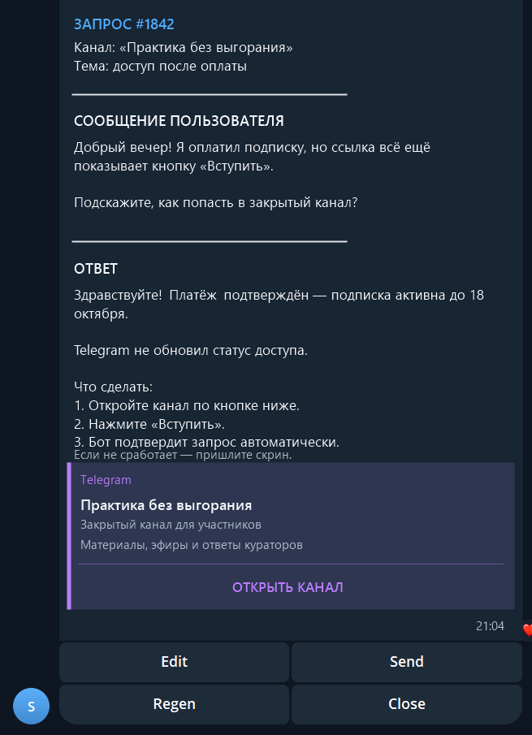

01 / AI SUPPORT
Поддержка,
у которой есть память.
Клиент пишет аккаунту поддержки или в webchat. Вопрос появляется в операторском Telegram; AI предлагает ответ по базе знаний, а оператор решает, что отправить.
НЕПОСРЕДСТВЕННО ОТАККАУНТА ПОДДЕРЖКИ
AI готовит основание и текст.
Последнее действие остаётся за человеком.
Два входа.
Одна поддержка.
Webchat — дополнительный канал. Прямые сообщения в аккаунт поддержки проходят тот же операторский сценарий; ответ клиент видит от аккаунта поддержки.
- ВХОДАккаунт
или webchat - СИНХРОНИЗАЦИЯTelegram
topics - ПОДГОТОВКАFAQ / RAG
→ черновик - КОНТРОЛЬОператор
проверяет - РЕЗУЛЬТАТОтвет от аккаунта
поддержки
Так это видит оператор.
Операторская оболочка Telegram общая с Lead Hunter; здесь показано именно обращение в поддержку. Имена и содержание переписки заменены безопасным сценарием.

С сайта тоже
можно написать.
Встроенный webchat сохраняет историю обращения и передаёт вопрос в общий операторский сценарий.


Рабочее место —
Telegram.
Топик объединяет обращение и подготовленный ответ. Edit, Regen, Send и Close оставляют финальное решение за оператором.

Оператор получает готовый AI-черновик и выбирает Edit, Regen или Send.
Поиск информации и подготовка типового ответа требуют меньше ручных действий.
Backend, Telegram API, RAG, webchat и интеграция каналов поддержки.
Lead Hunter